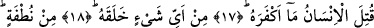
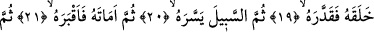
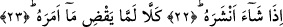

KAHROLASI İNSAN!
NE İNKARCIDIR!
17. Kahrolası insan! Ne inkârcıdır!
18. Allah onu neden yarattı?
19. Bir nutfeden yarattı da ona şekil verdi.
20. Sonra ona yolu kolaylaştırdı.
21. Sonra onun canını aldı ve kabre soktu.
22. Sonra dilediği bir vakitte onu yeniden diriltir.
23. Hayır henüz Allah’ın emrettiğini yapmadı.
“Kahrolası insan!” Bu okuduğumuz ifâde insanoğluna yapılan en kötü bedduâdır.
Çünkü “katl” yâni öldürülme ve kahredilme dünya âfet ve musîbetlerinin en fecîsidir.
Öldürülmeyi “lânet” şeklinde tefsir eden âlimler, bununla rûhâni helâk oluşu
kasdetmişlerdir. Çünkü bu cezâların en şiddetlisidir.
Aynu’l-meânî’de “kutile” fiili “kahrolası” şeklinde değil de “uzzibe” yâni “azab olası
insan” şeklinde tefsir olunmuştur.
“Ne inkârcıdır!” Yani Allah’ın ona bol bol ihsanına karşılık insan Allah’a karşı ne
çetin bir inkâr içindedir. Bir başka ifâdeyle; sen insanoğlunun inkârda bu derece aşırı
gitmiş olmasına şaş. Bu ifâde bir hayret ve şaşma kalıbı içinde bize sunuluyor. Aslında
hayret ve şaşma, karşılaştığı bir olayın sebebini bilmeyen kimse için düşünülebilir.
İlmi, bilinebilecek türden ne varsa her şeyi a’dan z’ye kuşatmış olan Allah’ın herhangi
bir şeye şaşması, hayret içinde kalması düşünülemez. Şu halde yukarda okuduğumuz
âyetteki şaşkınlık ve hayret ifâde etme kalıbı aslında Allah’tan insanlara yöneltilmiş -
hayrette kalma, şaşkınlık içine düşme ifâdesi değil- tam tersine insanları hayrette
bırakma ve şaşkınlık içine düşürme ifâdesidir. Ayrıca o kâfirlerin bedduâya lâyık
olduklarını ve bunu hak ettiklerini beyân cümlesidir. Buna göre âyeti şöyle anlamalıyız:
Sizler Allah’ın kendisine olan çokça ihsanını bilmekle birlikte, onun Allah’ı inkârına ve
O’na karşı nankörlüğüne şaşın, hayret edin. Kahırla ve lânetle böyle bir kimseye bedduâ
edin. Çünkü bu kişi böylesi bir bedduâyı haketmiştir denmiş oluyor. Bundan dolayı bazı
âlimler derler ki: Allah Teâlâ kâfire lânet etmiş, onun inkârını büyütmüştür. Çünkü kâfir
kendini yoktan var edeni tanımamıştır. Ayrıca kendi nefsini de tanımamıştır. Eğer nefsini
tanısaydı, o nefsi var edeni de tanırdı.
İbnu’ş-Şeyh der ki: Yukarda okuduğumuz “kutile’l-insan” ifâdesi, arapların ifâde